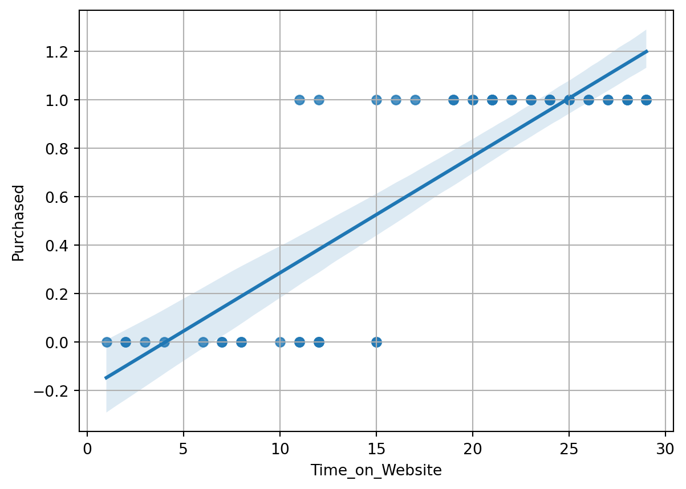
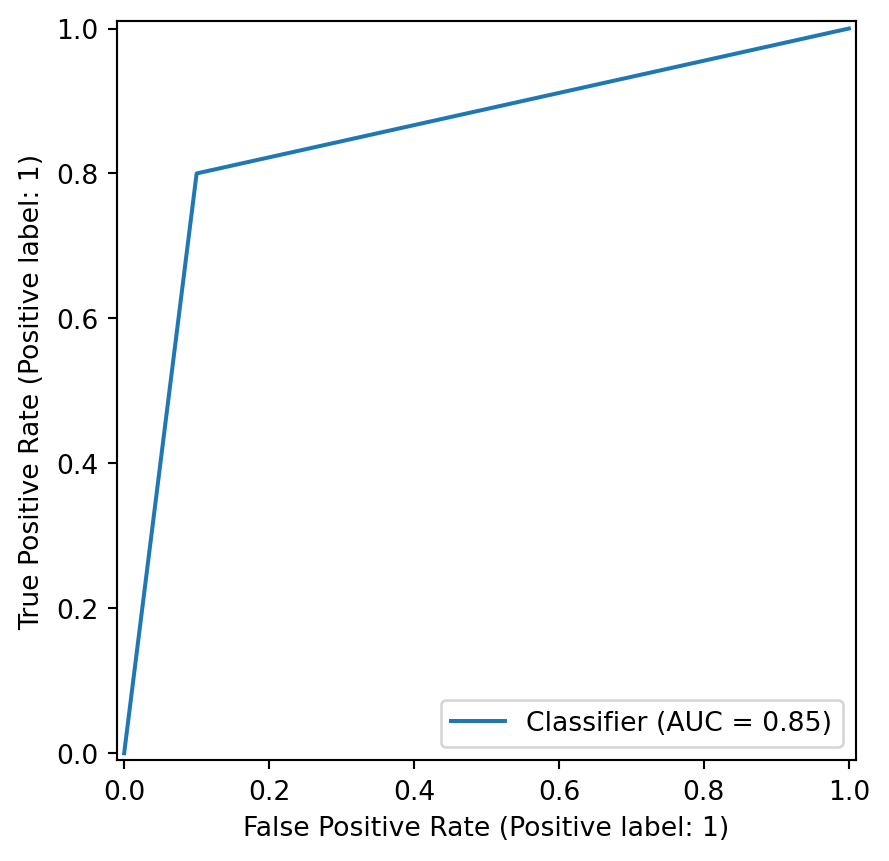

# Import libraries
import numpy as np
import pandas as pd
import math
import matplotlib.pyplot as plt
import seaborn as sns
from sklearn.linear_model import LogisticRegression
from sklearn.model_selection import train_test_split
from sklearn.metrics import accuracy_score, classification_report
import sklearn.metrics as metrics
from sklearn.metrics import RocCurveDisplayLogistic regression
About
This notebook aims to demonstrate the maths behind the Logistic Regression model with a synthetic dataset.
Setup
Packages
Dataset (created with ChatGPT)
np.random.seed(42)
time_on_website = np.random.randint(1, 30, 50)
purchase_prob = 1 / (1 + np.exp(-0.6 * (time_on_website - 15)))
purchased = np.random.binomial(1, purchase_prob)
data = {
"Time_on_Website": time_on_website,
"Purchased": purchased
}
df = pd.DataFrame(data)
df| Time_on_Website | Purchased | |
|---|---|---|
| 0 | 7 | 0 |
| 1 | 20 | 1 |
| 2 | 29 | 1 |
| 3 | 15 | 0 |
| 4 | 11 | 1 |
| 5 | 8 | 0 |
| 6 | 29 | 1 |
| 7 | 21 | 1 |
| 8 | 7 | 0 |
| 9 | 26 | 1 |
| 10 | 19 | 1 |
| 11 | 23 | 1 |
| 12 | 11 | 0 |
| 13 | 11 | 0 |
| 14 | 24 | 1 |
| 15 | 21 | 1 |
| 16 | 4 | 0 |
| 17 | 8 | 0 |
| 18 | 24 | 1 |
| 19 | 3 | 0 |
| 20 | 22 | 1 |
| 21 | 21 | 1 |
| 22 | 2 | 0 |
| 23 | 24 | 1 |
| 24 | 12 | 1 |
| 25 | 6 | 0 |
| 26 | 2 | 0 |
| 27 | 28 | 1 |
| 28 | 21 | 1 |
| 29 | 1 | 0 |
| 30 | 12 | 0 |
| 31 | 26 | 1 |
| 32 | 22 | 1 |
| 33 | 29 | 1 |
| 34 | 12 | 0 |
| 35 | 25 | 1 |
| 36 | 17 | 1 |
| 37 | 27 | 1 |
| 38 | 27 | 1 |
| 39 | 10 | 0 |
| 40 | 28 | 1 |
| 41 | 28 | 1 |
| 42 | 16 | 1 |
| 43 | 15 | 0 |
| 44 | 15 | 1 |
| 45 | 19 | 1 |
| 46 | 12 | 0 |
| 47 | 23 | 1 |
| 48 | 20 | 1 |
| 49 | 25 | 1 |
Linear VS Logistic regression
To understand the logistic regression, let’s first take a step back and see how a binary y variable fit into a linear regression model.
sns.regplot(x='Time_on_Website', y='Purchased', data=df);
plt.grid()
The graph indicate that if a visitor spent 15 minutes on the website, the probability of them making a purchase it around 0.5. However, the problem of usinga linear regression in such scenario is that the result is not bound by the binary category of 1 and 0, so the output cannot be interpt as probability. For instance, the vistors that spent more than 25 minutes will have a y variable of more than 1, which is not valid.
In order to understand the relationship between a continious x variable and a binary y variable, we would want a Sigmoid curve (the s line) like below:
sns.regplot(
x='Time_on_Website', y='Purchased',
data=df, logistic=True);
plt.grid()
The Logit function
To understand the Sigmoid curve, first we need to look at the logit function. The logit function ensures that the output of the model is bounded between 0 and 1. It is defined as follow:
\[logit(p) = ln(\frac{p}{1-p})\]
If we have a set of probability, and transform them with the logit function, you can see logit is only defined between the domain 0 and 1, and the range is from \(-\infty\) to \(\infty\).
import pandas as pd
import numpy as np
import seaborn as sns
np.random.seed(42)
prob_list = np.random.random_sample(50)
prob_logit = pd.DataFrame({'probability': prob_list})
prob_logit['logit'] = np.log(prob_logit['probability']/(1-prob_logit['probability']))
prob_logit
fig=sns.lineplot(x='probability', y='logit', data=prob_logit)
fig.axhline(y=0, linestyle='--', color='gray')
fig.set_title('p-value VS logit(p)')
plt.show()Now let’s transform the logit function into an equation with based on the p-value.
\[logit(p) = ln(\frac{p}{1-p}) = \beta_0 + \beta_1 * x_1\] \[ln(\frac{p}{1-p}) = \beta_0 + \beta_1 * x_1\] \[(\frac{p}{1-p}) = e^{\beta_0 + \beta_1 * x_1}\] \[p = e^{\beta_0 + \beta_1 * x_1} - e^{\beta_0 + \beta_1 * x_1}*p\] \[p + e^{\beta_0 + \beta_1 * x_1}*p = e^{\beta_0 + \beta_1 * x_1}\] \[p(1 + e^{\beta_0 + \beta_1 * x_1}) = e^{\beta_0 + \beta_1 * x_1}\] \[p = \frac{e^{\beta_0 + \beta_1 * x_1}}{1 + e^{\beta_0 + \beta_1 * x_1}}\]
The Sigmoid function
It is a mathematical function that maps any real-valued input z to a value between 0 and 1. It is defined as:
\[\sigma(z) = \frac{1}{1+e^{-z}}\]
Where: \[\sigma = Sigma\]
This is commonly used to represent the Sigmoid function.
\[z = \beta_0 + \beta_1 x_1 + \beta_2 x_2 + ... + \beta_n x_n\]
The Sigmoid function can also be written as:
\[\sigma(z) = \frac{e^z}{1+e^z}\]
Because:
\[e^{-z} = \frac{1}{e^z}\]
And
\[e^z * e^{-z} = e^0 = 1\]
In logistic regression, Instead of predicting directly from z, logistic regression maps z to a probability p using the sigmoid function, this ensures that p is always between 0 and 1, making it a valid probability:
\[p = \sigma(z) = \frac{1}{1+e^{-z}}\]
Now if you put the Logit function and the Sigmoid function together, below is also a valid equation: \[ln(\frac{p}{1-p}) = \beta_0 + \beta_1 * x_1 = z\]
And since \(z = \beta_0 + \beta_1 x_1\) \[p = \beta(z) = \frac{1}{1+e^{-z}} = \frac{e^z}{1+e^z} = \frac{e^{\beta_0 + \beta_1 * x_1}}{1 + e^{\beta_0 + \beta_1 * x_1}}\]
Now let’s look at how the Sigmoid function transform the z value to valid probability:
np.random.seed(42)
z_list = np.random.randint(-20, 20, 40)
def sigmoid_function(x):
p = 1/(1+math.exp(-x))
return p
sigmoid_sample = pd.DataFrame({'z': z_list})
sigmoid_sample['p'] = sigmoid_sample['z'].apply(sigmoid_function)
sigmoid_sample
sigmoid_sample = sigmoid_sample.sort_values(by='z')
sns.lineplot(x='z', y='p', data=sigmoid_sample);The sigmoid function, as the name suggests, takes on an S-looking shape. The domain z stretches from \(-\infty\) to \(\infty\), while the range is bounded between 0 and 1. The output of the sigmoid function therefore can be interpreted as a probability.
Maximum likelihood estimation (MLE)
A technique for estimating the beta parameters that maximize the likelihood of the model prodcuing the observed data.
- Likelihood:
The probability of observing the actual data, given some set of beta parameters.
Binomial logistic regression
A technique that models the probability of an observation falling into one of two categories, based on one or more independent variables.
Odds and Logit
- Odd:
\[\text{odd} = \frac{P}{1-P}\]
- Logit (log-odds):
The logarithm of the odds of a given probability. So the logit of the probability p is equal to the logarithm of p divided by 1 minus p.
\[\text{logic}(p) = \text{log}(\frac{p}{1-p})\]
- Logit in terms of X variables:
\[\text{logic}(p) = \text{log}(\frac{p}{1-p}) = \beta_0 + \beta_1 X_1 + \beta_2 X_2 + ... + \beta_n X_n\]
Assumptions
- Linearity:
There should be a linear relationship between each X variable and the logit of the probability that Y equals 1.
- Independent observation:
While observation are independent:
\[P(A and B) = P(A)*P(B)\]
- No multicollinearity:
The multiple X variables should not be highly correlated to one another.
- No extreme outliner
Training, evaluate and interpret a Binomial logistic regression model
Training
# Independent (X) and dependent (y) variables
X = df[['Time_on_Website']] # Features
y = df['Purchased'] # Target
# Step 2: Split the data into training and testing sets (30% are testing)
X_train, X_test, y_train, y_test = train_test_split(X, y, test_size=0.3, random_state=42)
# Step 3: Train Logistic Regression Model
# Initialize and train the logistic regression model
# clf: classifier
clf = LogisticRegression().fit(X_train, y_train)# print the coefficient
clf.coef_array([[0.65112362]])# print the inter cept
clf.intercept_array([-8.77246384])# Plot the logistic regression and its confidence band
sns.regplot(x='Time_on_Website', y='Purchased', data=df, logistic=True);Evaluate the trained model
First, we can use the predict function to get the predicted dependent variable using the hold out sample (X) with the trained model:
# predict the y using test x
y_pred = clf.predict(X_test)
y_predarray([0, 0, 0, 1, 0, 1, 0, 0, 1, 0, 0, 0, 1, 0, 1])Now, we can also run the predict_proba function to return the predicted probabilities of the target variable belonging to each class for the given input data.
clf.predict_proba(X_test)array([[8.33425835e-01, 1.66574165e-01],
[9.05614622e-01, 9.43853779e-02],
[7.22917629e-01, 2.77082371e-01],
[2.66258796e-02, 9.73374120e-01],
[9.72440857e-01, 2.75591427e-02],
[1.40635096e-02, 9.85936490e-01],
[9.99430520e-01, 5.69480365e-04],
[9.92352671e-01, 7.64732880e-03],
[3.86371202e-03, 9.96136288e-01],
[9.98908481e-01, 1.09151885e-03],
[8.33425835e-01, 1.66574165e-01],
[8.33425835e-01, 1.66574165e-01],
[1.49528535e-04, 9.99850471e-01],
[9.85436963e-01, 1.45630373e-02],
[2.70045766e-01, 7.29954234e-01]])Key Use Cases - Thresholding: You can set custom thresholds for class predictions based on probabilities instead of using the default 0.5 threshold. - Uncertainty: Helps assess the confidence of the predictions. - Visualization: Visualizing probabilities can provide insights into the decision boundaries and model behavior.
Confusion Matrix
Now we can also run a Confussion Matris to visualise how well our model categorised each data point. The Confusion Matrix is a graphical representation of how accurate a classifier is at predicting the labels for a categorical variable.
cm = metrics.confusion_matrix(y_test, y_pred, labels = clf.classes_)
disp = metrics.ConfusionMatrixDisplay(confusion_matrix = cm,display_labels = clf.classes_)
disp.plot()
If you don’t need to customise the labels, this should do:
metrics.ConfusionMatrixDisplay.from_predictions(y_test, y_pred)Now we can use some metrics to evaluate the values associated with the matrix: - True Positives - False Positives - True Negatives - False Negatives
Below are some common metrics we can use:
Precision
The proportion of positive predictions that were true positives.
\[\text{Presion} = \frac{\text{True Positives}}{\text{True Positives} + \text{False Positives}}\]
metrics.precision_score(y_test, y_pred)0.8When to use:
Using precision as an evaluation metric is especially helpful in contexts where the cost of a false positive is quite high and much higher than the cost of a false negative. For example, in the context of email spam detection, a false positive (predicting a non-spam email as spam) would be more costly than a false negative (predicting a spam email as non-spam). A non-spam email that is misclassified could contain important information, such as project status updates from a vendor to a client or assignment deadline announcements from an instructor to a class of students.
Recall
The proportion of positives the model was able to identify correctly.
\[\text{Recall} = \frac{\text{True Positives}}{\text{True Positives} + \text{False Negatives}}\]
metrics.recall_score(y_test, y_pred)0.8When to use:
Using recall as an evaluation metric is especially helpful in contexts where the cost of a false negative is quite high and much higher than the cost of a false positive. For example, in the context of fraud detection among credit card transactions, a false negative (predicting a fraudulent credit card charge as non-fraudulent) would be more costly than a false positive (predicting a non-fraudulent credit card charge as fraudulent). A fraudulent credit card charge that is misclassified could lead to the customer losing money, undetected.
Accuracy
The proportion of data points that were correctly categorised.
\[\text{Accuracy} = \frac{\text{True Positives} + \text{True Negatives}}{\text{Total Predictions}}\]
metrics.accuracy_score(y_test, y_pred)0.8666666666666667When to use:
It is helpful to use accuracy as an evaluation metric when you specifically want to know how much of the data at hand has been correctly categorized by the classifier. Another scenario to consider: accuracy is an appropriate metric to use when the data is balanced, in other words, when the data has a roughly equal number of positive examples and negative examples. Otherwise, accuracy can be biased. For example, imagine that 95% of a dataset contains positive examples, and the remaining 5% contains negative examples. Then you train a logistic regression classifier on this data and use this classifier predict on this data. If you get an accuracy of 95%, that does not necessarily indicate that this classifier is effective. Since there is a much larger proportion of positive examples than negative examples, the classifier may be biased towards the majority class (positive) and thus the accuracy metric in this context may not be meaningful. When the data you are working with is imbalanced, consider either transforming it to be balanced or using a different evaluation metric other than accuracy.
F1 score
The F1 score is a performance metric that evaluates the model’s balance between precision and recall. It’s especially useful for classification problems with imbalanced datasets, where one class might significantly outnumber the other.
\[\text{F1 score} = 2*\frac{\text{precession} * \text{recall}}{\text{precession} + \text{recall}}\]
When to use:
What F1 Score Does in Logistic Regression:
- Measures Classification Quality: Logistic regression predicts probabilities, which are converted into class labels using a threshold (e.g., 0.5 by default). The F1 score then measures how well the model performs in classifying instances.
- Handles Imbalance: In cases where one class (e.g., “0”) dominates the dataset, accuracy can be misleading. The F1 score highlights performance on the minority class, making it more robust to imbalanced data.
- Threshold Sensitivity: The F1 score is sensitive to the decision threshold. If you adjust the threshold (e.g., predicting “1” for probabilities > 0.7 instead of 0.5), the F1 score will change.
Two other common evaluations techniques that maybe helpful to work with classifier are ROC curves and AUC.
ROC curves (Receiver Operating Characteristic Curve)
An ROC curve helps in visualizing the performance of a logistic regression classifier. To visualize the performance of a classifier at different classification thresholds, you can graph an ROC curve. In the context of binary classification, a classification threshold is a cutoff for differentiating the positive class from the negative class.
For example, the default cutoff for a binary variable is 0.5, anything above 0.5 is classfied as True. You can adjust the cutoff to a differnt level, like 0.4, this will change the number of False Positives and False Negatives.
An ROC curve plots two key concepts:
True Positive Rate (Recall): \[\text{True Positive Rate} = \frac{\text{True Positives}}{\text{True Positives} + \text{False Negatives}}\]
False Positive Rate: The ratio between the False Positives and the total count of observations that should be predicted as False. The formula for False Positive Rate is as follows:
\[\text{False Positive Rate} = \frac{\text{False Positives}}{\text{False Positives} + \text{True Negatives}}\]
FP = 1
TN = 9
FPR = 1/(1+9)
FPR0.1The ROC Curve display how change in the threshold (from 0 to 1) interact with the True Postiive Rate and False Positive Rate. As a generalisation, we would want to use the threshold where the line is the closet to the top left corner. The ROC curve help us understand if a model is good at performing the classification.
RocCurveDisplay.from_predictions(y_test, y_pred)
plt.show()
AUC (area under the ROC curve)
As the name suggest, the AUC refers to the area under the curve in the ROC curve ranging from 0 to 1.
A score of 0 means that under all threshold, all positive are false positive.
A score of 1 means that all positive are true positive, which also means the model’s prediction is 100% correct.
An AUC smaller than 0.5 indicates that the model performs worse than a random classifier (i.e. a classifier that randomly assigns each example to True or False), and an AUC larger than 0.5 indicates that the model performs better than a random classifier.
Now let’s run the AUC score with the model we built:
metrics.roc_auc_score(y_test,y_pred)0.8500000000000001Interpret the trained model
Let’s say we evaluated the metrics and decided that the model we trained is good. How do we interpret it?
Let’s go back to the Logit function and the coefficients.
Logit function
Where \(p = p(Y=1)\) \[logit(p) = ln(\frac{p}{1-p}) = \beta_0 + \beta_1 x_1\]
Interpret coefficients
Use the model we trained, we already know the coefficient is 0.65.
clf.coef_array([[0.65112362]])That means a one-unit increase in time on website is associated with a 0.65 increase in the log odds of p. To interpret change in odds of Y as a percentage, you can exponentiate \(\beta_1\):
\[e^{\beta_1} = e^0.65 \approx 1.92\]
b1 = clf.coef_
np.exp(b1)array([[1.91769437]])So, for every one-unit increase in time on website, you can expect that the odds of purchase to increase by 1.92, or 92%.
Now, put the 92% figure into the logit function.
For 1 minute on the website: approximately 0.03% (0.000297)
def p(x):
b_0 = clf.intercept_
b_1 = clf.coef_
logit_p = b_0 + b_1*x
p = np.exp(logit_p)
return p
p_x_1 = p(x=1)
p_x_1array([[0.00029713]])For 2 minutes on the website: approximately 0.06% (0.000569)
p_x_2 = p(x=2)
p_x_2array([[0.0005698]])Increase in time on website from 1 minute to 2 mintues, increase the probability to purchase for approximately 92%.
(p_x_2-p_x_1)/p_x_1array([[0.91769437]])